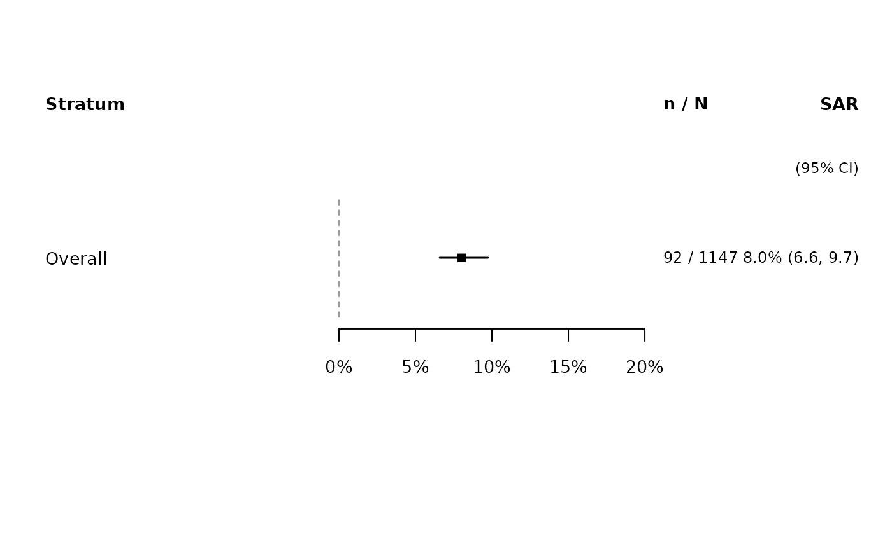
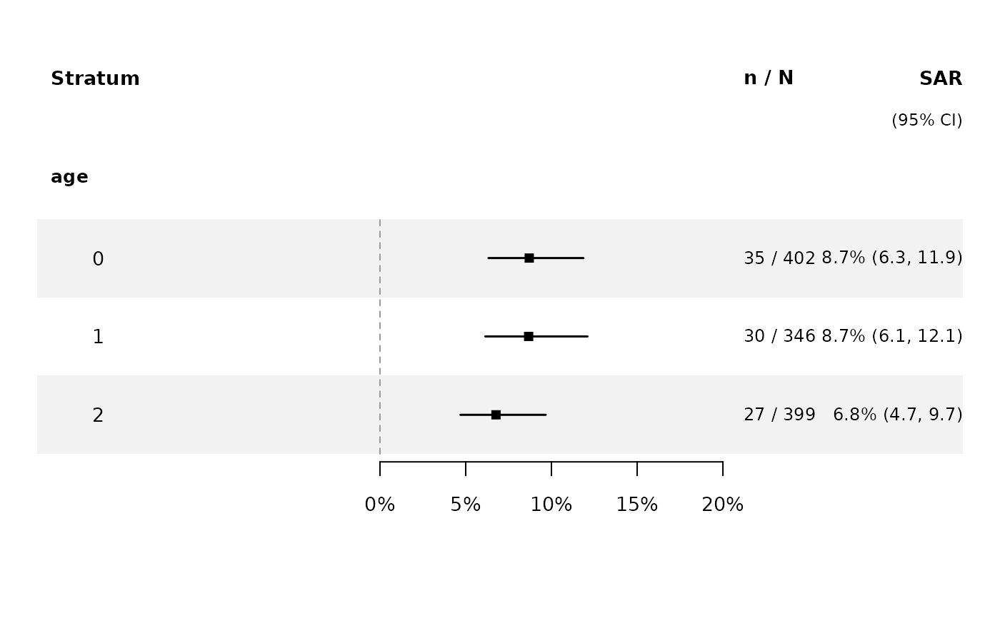
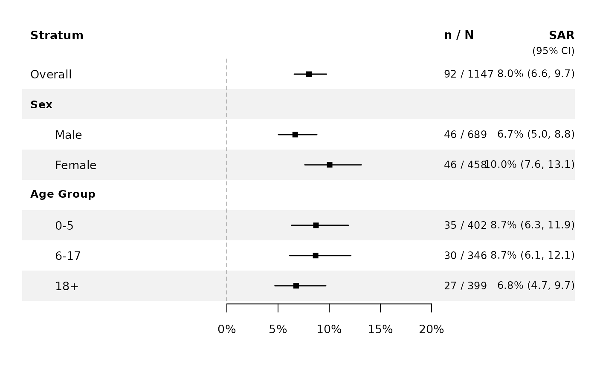

Forest plot showing observed secondary attack rates (SAR) with Wilson score
95% confidence intervals. Supports overall SAR, stratification by one or
more covariates, and combinations thereof. Variable names are used as bold
section headers; strata are indented below. The layout mirrors
plot_covariates(): labels on the left, point estimates and CI bars in
the middle, and n/N counts plus SAR percentages on the right.
Usage
plot_attack_rate(
fit,
by = NULL,
include_overall = FALSE,
labels = NULL,
file = NULL,
width = 8,
height = NULL,
xlim = NULL,
cex = 0.85,
...
)Arguments
- fit
An object of class
hhdynamics_fit.- by
Formula, character string, or a list of formulas naming the stratification variable(s). Examples:
~age,"age",list(~sex, ~age). Default:NULL(overall SAR only).- include_overall
Logical. When
TRUE, an "Overall" row is prepended even whenbyis specified. Default:FALSE.- labels
Optional named list of custom display labels for variables and their levels. Each element is a list with
name(display name for the section header) and/orlevels(character vector of level labels in the same order assort(unique(variable))). Names must match variable names in the data. Example:list(age = list(name = "Age Group", levels = c("0-5", "6-17", "18+"))).- file
Optional file path for PDF output. Height is auto-calculated from the number of rows. Default:
NULL(current device).- width
PDF width in inches. Default: 8.
- height
PDF height in inches. Default:
0.45 * n_rows + 1.8.- xlim
Numeric vector of length 2 for the x-axis range (probability scale). Default: auto-determined from the data.
- cex
Character expansion factor. Default: 0.85.
- ...
Additional graphical parameters passed to
plot().
Value
Invisible data frame of the estimate rows (Stratum, N_contacts, N_infected, SAR, Lower, Upper).
Examples
# \donttest{
data(inputdata)
fit <- household_dynamics(inputdata, ~sex, ~age,
n_iteration = 15000, burnin = 5000, thinning = 1)
#> Iteration: 1000
#> Iteration: 2000
#> Iteration: 3000
#> Iteration: 4000
#> Iteration: 5000
#> Iteration: 6000
#> Iteration: 7000
#> Iteration: 8000
#> Iteration: 9000
#> Iteration: 10000
#> Iteration: 11000
#> Iteration: 12000
#> Iteration: 13000
#> Iteration: 14000
#> The running time is 41 seconds
# Overall only
plot_attack_rate(fit)

# Stratified by age with section header
plot_attack_rate(fit, by = ~age)

# Combined: overall + age + sex in one figure
plot_attack_rate(fit, by = list(~sex, ~age), include_overall = TRUE,
labels = list(sex = list(name = "Sex", levels = c("Male", "Female")),
age = list(name = "Age Group", levels = c("0-5", "6-17", "18+"))))

# }